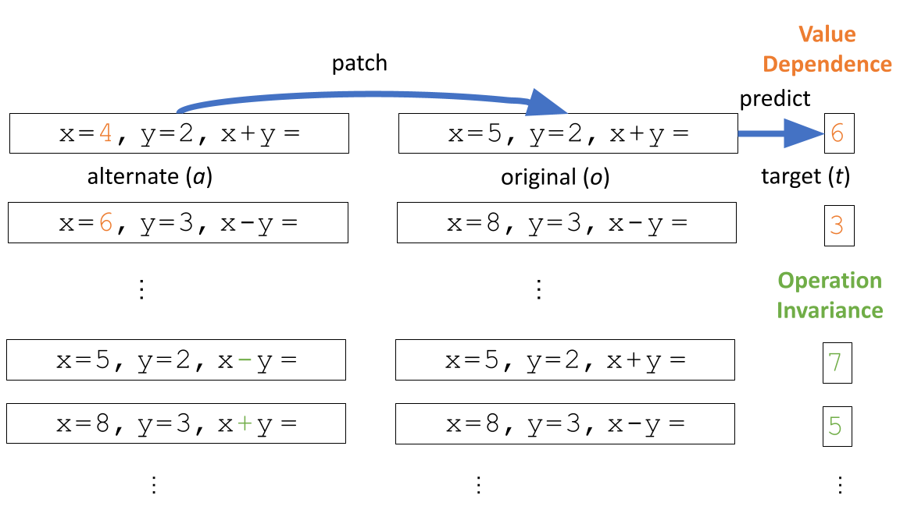

The ability to infer mental states of others—known as Theory of Mind (ToM)—is an essential aspect of social and collective intelligence. Consequently, numerous studies have explored this capability in contemporary language models (LMs). However, there is no clear consensus on the extent of these capabilities, largely because existing research relies primarily on behavioral testing. That is, it remains unclear whether LMs are leveraging surface-level statistical patterns or have genuinely learned to represent and track mental states. To address this, the present work investigates the belief-tracking mechanisms that may underlie the early signs of ToM in LMs.
Our investigation uncovered a consistent algorithmic pattern, which we refer to as the Lookback Mechanism. The language model (LM) first generates reference information—specifically, Ordering IDs (OIDs)—for each character–object–state triple. It then performs reasoning over this reference information using three distinct lookbacks. The first, the Binding Lookback, identifies the correct state OID. The second, the Answer Lookback, uses the OID obtained from the binding lookback to retrieve the corresponding answer state token value. Finally, when an explicit visibility condition between characters is present, the LM employs an additional lookback—called the Visibility Lookback—to integrate information about the observed character, thereby enhancing the observing character's awareness.
Existing datasets for evaluating ToM capabilities of LMs are designed for behavioral testing and lack the ability to construct counterfactual pairs needed for causal analysis. To address this, we constructed CausalToM, a structured dataset of simple stories, where each story involves two characters, each interacting with a distinct object causing the object to take a unique state. We analyze the LM's ability to track characters' beliefs in two distinct settings:
In this work, we investigate the internal mechanisms that enable Llama-3-70B-Instruct to reason about and answer questions concerning characters' beliefs about the state of each object.
Our investigations of belief tracking uncovered a recurring pattern of computation that we call lookback. In a lookback mechanism, source information is copied via attention into an address copy in the residual stream of a recalled token and a pointer copy in the residual stream of a lookback token that occurs later in the text. The LM places the address alongside a payload of the recalled token's residual stream that can be brought forward to the lookback token via attention if necessary.
We identified three key lookback mechanisms that collectively perform belief tracking:
When presented with belief tracking tasks where characters have no visibility of each other, the LM solves the task using Ordering ID assignment, binding lookback, and answer lookback.
LM processes input tokens by assigning an Ordering ID (OID) to each crucial token, including character, object, and state tokens. These OIDs, encoded in a low-rank subspace of the internal activation, serve as a reference that indicates whether an entity is the first or second of its type, regardless of its token value.
The Binding lookback is the first operation applied to these OIDs. The character and object OIDs, serving as the source information, are duplicated into two instances each. One copy, referred to as the address, is placed in the residual stream of the state token (recalled token), alongside the state OID as the payload to transfer. The other copy, known as the pointer, is moved in the residual stream of the final token (lookback token). These pointer and address copies are then used to form the QK-circuit at the lookback token, which dereferences the state OID payload, transferring it from the state token to the final token.
The LM answers the question using the Answer Lookback. The state OID of the correct answer serves as the source information, which is copied into two instances. One instance, the address copy of the state OID, is in the residual stream of the state token (the recalled token) with the state token itself as the payload. The other instance, the pointer copy of the state OID, is transferred to the residual stream of the final token as the binding lookback payload. This pointer is then dereferenced, bringing the state token payload into the residual stream of the final token.
When provided with additional information—that one of the characters (observing) can observe the actions of others (observed), the LM employs another lookback mechanism, which we refer to as the Visibility Lookback, to incorporate information about the observed character.
As illustrated above, the LM first generates a Visibility ID at the residual stream of the visibility sentence, serving as the source information. The address copy of the visibility ID remains in the residual stream of the visibility sentence, while its pointer copy gets transferred to the residual streams of the question tokens, which are the lookback tokens. Then LM forms a QK-circuit at the lookback token and dereferences the visibility ID pointer to bring forward the payload containing vital information about the observed character.
Our work builds upon insights from previous research that has investigated large language models from various other perspectives:
Nikhil Prakash, Tamar Rott Shaham, Tal Haklay, Yonatan Belinkov, David Bau. Fine-Tuning Enhances Existing
Mechanisms: A Case Study on Entity Tracking. ICLR 2024.
Notes: Investigated how LLMs perform entity tracking task and found that they primarily use
position-based reference information to associate entities with their corresponding attributes. Additionally,
it also identified a submechanism similar to the Answer lookback, through the model deferences the reference
information to fetch correct attribute token value.
Atticus Geiger, Zhengxuan Wu, Christopher Potts, Thomas Icard, and Noah D. Goodman. Finding Alignments
Between Interpretable Causal Variables and Distributed Neural Representations.
Conference on Causal Learning and Reasoning (CLeaR 2024).
Notes: Proposed Distributed Alignment Search (DAS) method to find the alignment between high-level and
low-level causal models by learning an orthogonal matrix using gradient descent.

Xander Davies, Max Nadeau, Nikhil Prakash, Tamar Rott Shaham, David Bau. Discovering Variable Binding
Circuitry with Desiderata.
Workshop on Challenges in Deployable Generative AI at International Conference on Machine Learning (ICML
2023).
Notes: Proposed Desiderata-based Component Masking (DCM) method to localize components responsible for
variable binding in Llama-13B.